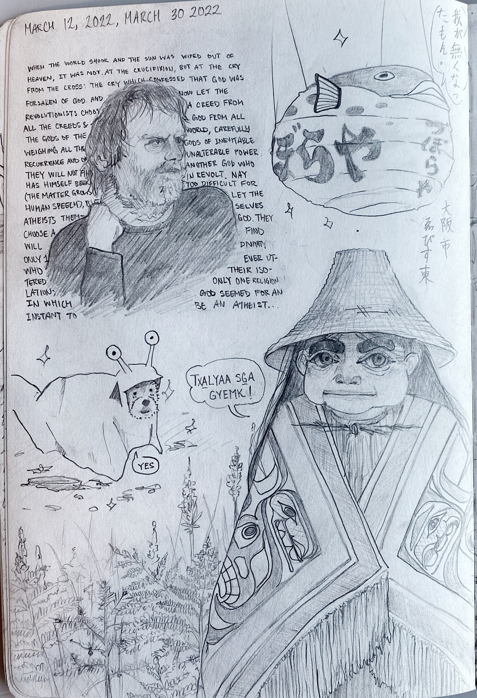

a sketch of Žižek and a quote by him, drawn while listening to some of his interviews; the ever famous fugu lantern in Osaka which i heard was removed earlier this year; a dog in a slug suit; and a Tsimshian woman, drawn in a Tsimshian-esque fashion